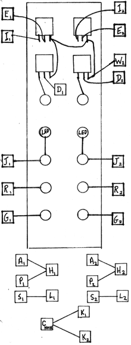

DUAL RANDOM VOLTAGE GENERATOR Two PC boards 1175SSHC are stacked in this dual unit. Wiring is identical for each board, as seen from the diagram. Subscript 1 refers to the bottom board and subscript 2 refers to the top PC board. For initial wiring, lay the two boards side-by-side and connect as shown. Be certain to make the wires to the board which will be on top an inch or two longer. After connecting the wires to the pads, connect an insulated jumper from pad X on one board to pad X on the other board. Do the same with pads Z. Do the same for pads W. This assures that power will reach both boards. The normal power supply cables are best attached to the bottom board. Two plastic stand-offs will provide the mechanical support between the PC boards. IMPORTANT NOTE: For the RVG's to function at all, three jumpers must be installed as indicated below the diagram. Also a jumper must be installed to the NOISE Source as indicated. This connection is necessary because the RVG derives its randomness from the Noise Source. USER TEST:
Patch the "SMOOTH" output into a VCO and note a random continuous frequency change which is rate controlled by the knob or an input VC.
|